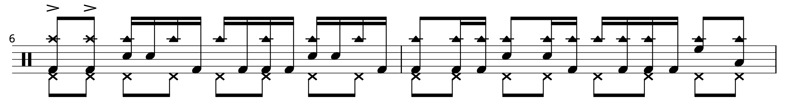

Transcription: "Good Times Bad Times" — John Bonham with Led Zeppelin

Welcome to the blog! I have a lot of things to share on my site, and I’ll kick things off with sheet music for the classic “Good Times Bad Times”. Most of the really famous licks are pretty well known, but since it’s such a revered tune I took a detailed look. I don’t have a lot of full-length transcriptions, but with songs like this that are under 3 minutes, it’s not too difficult.
The famous bass drum triplets have been widely dissected, but there are a lot of other details that are commonly missed. One thing I always like to point out involves the hi-hat pedal that we hear in the intro; it doesn’t drop out when the first verse starts. Rather, Bonham plays it throughout most of the song, only stopping during those one measure breaks after each chorus.
More interesting to me is the cowbell playing in the first verse. Listen very closely — it may seem like Bonham is playing steady 8th’s but he actually throws in these 16th note licks, played as triple and quintuple strokes. Check out what's happening at measure 7:
It’s very easy to miss, but it’s there. I can’t think of any other Zeppelin tune where Bonham takes this approach with the right hand. The closest that comes to mind is during “Ten Years Gone”, shortly after the guitar solo. Even more curious is how Bonham only does this during the first verse of “Good Times Bad Times”, dialing it back during the rest of the tune.
All things considered, this may be Bonham’s busiest playing on a Led Zeppelin song. I guess when they picked “Good Times Bad Times” to be the album opener, Bonzo decided he needed to go hard on the tune. Aside from the bass drum doubles, the playing that really stands out to me involves the jagged, syncopated tom stuff. A pretty hip lick is heard during the guitar solo, at measure 40:
Some other highlights are heard during the outro, such as this cool 3 beat pattern. Notice how he starts it on beat 2 so it doesn’t sound too crazy:

I’m also a fan of this fun little joint right after the fade-out starts:
A lot of these licks are variously recognized by rock drummers to be “Afro-Cuban”; I use that term in quotes because “Afro-Cuban” usually describes a white drummer’s interpretation of what a Latin groove should sound like, typically with flashy names like Mambo, Cha-Cha, Songo, Mozambique, Guaguancó, etc…
Anyway, there isn’t a whole lot of drumming like this on other Led Zeppelin tunes. Funny thing, there’s an obscure story about Bonham having a little too much fun during the early Zeppelin rehearsals. Here’s an excerpt from the sort-lived Traps: The Art Of Drumming:
The new band proved a magical combination, although Bonham at first played too busily and ignored warnings from Page to keep it simple. Grant strode over to the drummer and said, “Do you like your job in this band?” Bonham nodded. “Well, do as this man says. Behave yourself, Bonham, or you’ll disappear — through different doors.”
I don't know what order the songs were recorded in, but if "Good Times Bad Times" was done first, maybe Page gave Bonham a concession and let him go nuts on this track before telling him to reign it in for the rest of the album. I've long suspected Page included this tune to basically let his drummer show off.
It’s a bummer Traps only made it for ~3 years, because they did really good cover stories. The Bonham piece is really great, and you can still get it at DRUM! Magazine’s store. Bootleg PDF’s are out there, but since it seems that Traps fell apart because of money, I would encourage you to buy a copy, it’s only 8 bucks.
"Good Times Bad Times" on Spotify and Apple Music.
Posted on July 26, 2020
Tags: 2020 • Transcription • John Bonham • Led Zeppelin